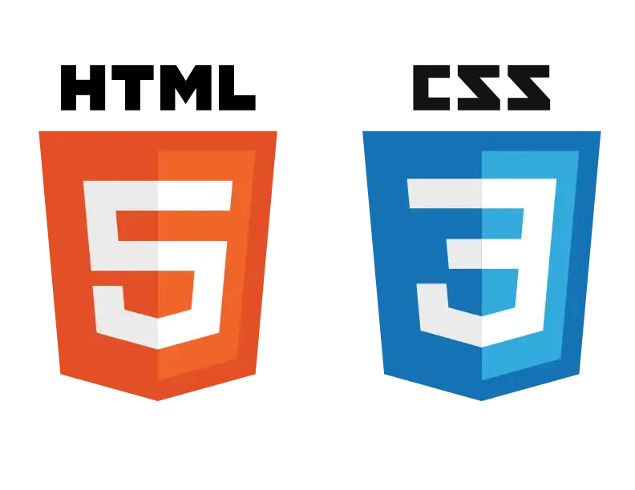
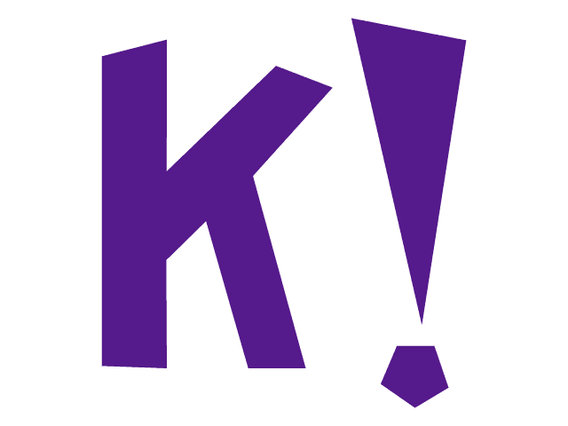

{kind=link}
sobre mim
Meu nome é Morian Brandao Lares, tenho 16 anos e sou de Vitoria, Espirito Santo. Gosto de jogar qualquer tipo de jogo, tanto console quanto pc e mobile. Gosto de escrever poemas e textos pois foi o unico jeito de me expressar corretamente. Sou maluco e gosto de conversar com todo mundo, pois gosto de fazer amizades o tempo todo. Sou novo na area da programação, mas eu to gostando bastante. Ja fui jogador de volei federado pelo Alvares Cabral, e hoje, estou aposentado por saude.
meus trabalhos
Abaixo estão alguns dos trabalhos que fiz em diferentes projetos:
Trabalhei sendo jogador de volei federado do estado pelo Clube Alvares Cabral
Trabalhei des de pequeno por conta propria, pois sempre aprendi a ganhar dinheiro sozinho
Trabalhei no marketing digital sendo vendedor de cursos, roupas e assesorios
As areas que mais trabalhei foram essas aki:

minhas especialidades
Minhas especialidades estao sendo essas, mmas minha meta é atribuir mais ao curriculo:
Photoshop basico 
C++ 
Html e css basico
Excel intermediário 
Criação de jogos no Kahoot! 
Criação de circuitos no Tinkercad 
Editação e criação de imagens pelo canva 
contato
caso não tenha conseguido entrar nas minhas redes sociais acima, estes são meus Contatos
Email: morianlares@gmail.com 
Telefone: (27) 9 9619-6948